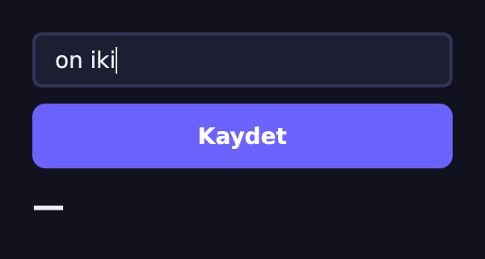
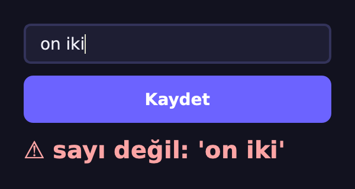
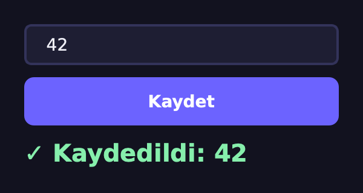
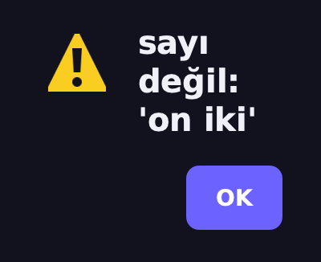
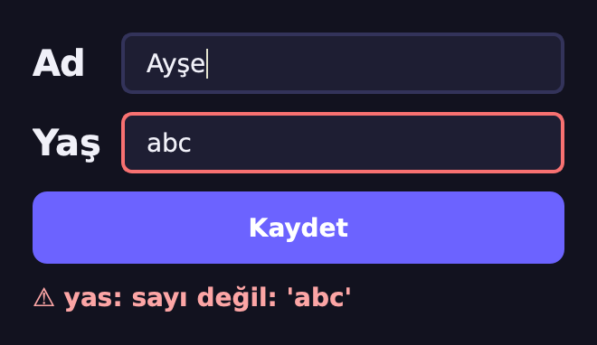

Hata Olur,
Program Ayakta Kalır
İstisna Yönetimi & Hata Ayıklama
Hatayı Görmekten Yönetmeye
H6'da Python bize onlarca TypeError fırlattı, biz yalnız okuduk. Bu hafta
hatayı yakalayıp kullanıcıya düzgünce anlatacağız, gerekirse kendimiz fırlatacağız.
1 · Okumak
Traceback'i en alttan oku: tür, ileti, yer, çağıranlar.
2 · Yakalamak
try / except / else /
finally; istisnalar da bir sınıf ağacı.
3 · Fırlatmak
raise, kendi hata
sınıflarımız ve raise … from zinciri.
4 · Qt + Ayıklama
Formda hata mesajı, QMessageBox; logging, pdb,
assert.
Sonunda: hatalı kutuyu kırmızıyla gösteren güvenli bir kayıt formu.
Hatalarla Zaten Tanıştık
📐 H6 · TypeError
“Can't instantiate abstract class…”. Python sözü tutulmayan sınıfı hatayla durdurdu.
🧬 H4 · isinstance
Bir nesne atasının
türünden de sayılır. Bu hafta except da tam böyle eşleşecek.
🤷 H5 · İki “Not”
NotImplemented bir değer, NotImplementedError bir hata.
İkincisi bu haftanın konusu.
Hata bir nesnedir: türü (sınıfı) ve iletisi vardır. Ona sınıf gibi davranabiliriz: yakalarız, türetiriz, kendimiz üretiriz.
Kullanıcı “on iki” Yazarsa?
from PySide6.QtWidgets import (QApplication, QWidget, QLineEdit,
QPushButton, QLabel, QVBoxLayout)
class Form(QWidget):
def __init__(self):
super().__init__()
self.giris = QLineEdit()
dugme = QPushButton("Kaydet")
self.durum = QLabel("—")
L = QVBoxLayout(self)
for w in (self.giris, dugme, self.durum):
L.addWidget(w)
dugme.clicked.connect(self.kaydet)
def kaydet(self):
yas = int(self.giris.text()) # "on iki" → ?
self.durum.setText(f"Kaydedildi: {yas}")
app = QApplication([])
pencere = Form()
pencere.show()
app.exec()🧮 16. satır
int("12") → 12. Peki
int("on iki")?
🤔 Tahmin et
Pencere kapanır mı? Etikette ne yazar? Terminalde ne görünür?
Çökmedi, Ama Kimse Bir Şey Görmedi

😶 Kullanıcı
Hiçbir şey olmadı sanır; etiket hâlâ “—”.
🖥️ Terminal
Hatanın izi orada: türü, iletisi, satırı. Kullanıcı terminale bakmaz.
🧯 PySide6
Slottaki hatayı yazdırdı, olay
döngüsü sürdü; sonraki "12" tıklaması çalışır.
Hata İzini Alttan Oku
def yas_oku(metin):
return int(metin)
def kaydet(metin):
yas = yas_oku(metin)
return f"{yas} yaş kaydedildi"
print(kaydet("12")) # 12 yaş kaydedildi
print(kaydet("on iki"))
# ValueError: invalid literal for int()…1 · En alt satır
Tür ve ileti:
ValueError, “invalid literal…”. Önce bunu oku.
2 · Son File
Hatanın doğduğu yer:
line 2, in yas_oku. ^^^ ifadeyi gösterir.
3 · Yukarı doğru
Oraya kim getirdi:
<module> → kaydet → yas_oku.
try /
except: Düşmeden Tut
metin = "on iki"
try:
yas = int(metin) # hata burada
print("dönüştü:", yas) # atlanır
except ValueError as e:
print("yakalandı:", e)
# yakalandı: invalid literal for int()…
print("program devam ediyor") # program devam ediyor
try:
sonuc = 10 / int("0")
except (ValueError, ZeroDivisionError) as e:
print(type(e).__name__, "→", e)
# ZeroDivisionError → division by zero🪤 except Tür as e
Yalnız o türü yakalar;
e hata nesnesidir, str(e) iletisi.
↪️ Atlama
Hata satırından sonrası (4. satır)
çalışmaz; program except'ten sonra sürer.
📦 Demet
(A, B): iki türü tek blokta
yakala.
else ve
finally Ne Zaman Çalışır?
def bol(girdi):
try:
n = int(girdi)
sonuc = 100 / n
except ValueError:
print("sayı değil")
except ZeroDivisionError:
print("sıfıra bölünmez")
else: # hata OLMAZSA
print("sonuç:", sonuc)
finally: # HER durumda
print("bitti")
bol("4")
# sonuç: 25.0
# bitti
bol("abc")
# sayı değil
# bitti
bol("0")
# sıfıra bölünmez
# bitti✅ else
Yalnız try hatasız
biterse. try'ı kısa tutmaya yarar: “riskli kısım” ile “devamı” ayrılır.
🧹 finally
Her durumda: hata olsa da, olmasa da. Dosyayı kapat, düğmeyi geri aç.
Sıra: try → (except
ya da else) → finally.
Hangi Satırlar Çalıştı?
Bir girdi seç. Satır izi Python'da sys.settrace ile,
çıktılar gerçek çalıştırmayla alındı.
1def bol(girdi):
2 try:
3 n = int(girdi)
4 sonuc = 100 / n
5 except ValueError:
6 print("sayı değil")
7 except ZeroDivisionError:
8 print("sıfıra bölünmez")
9 else:
10 print("sonuç:", sonuc)
11 finally:
12 print("bitti")
Not: else: ve
finally: satırları kendileri iz bırakmaz; altlarındaki gövde çalışır.
except,
isinstance Gibi Eşleşir
[c.__name__ for c in ZeroDivisionError.__mro__]
# ['ZeroDivisionError', 'ArithmeticError',
# 'Exception', 'BaseException', 'object']
try:
1 / 0
except ArithmeticError as e: # atası yakaladı
print("yakalandı:", type(e).__name__)
# yakalandı: ZeroDivisionError
isinstance(ZeroDivisionError(), ArithmeticError) # True
issubclass(KeyError, LookupError) # True
issubclass(KeyboardInterrupt, Exception) # False🌳 Ağacın bir parçası
BaseException ├─ KeyboardInterrupt ├─ SystemExit └─ Exception ├─ ArithmeticError │ ├─ ZeroDivisionError │ └─ OverflowError ├─ LookupError │ ├─ KeyError │ └─ IndexError ├─ ValueError └─ TypeError
Yukarıdan Aşağı, İlk Uyan Kazanır
Bir hata seç. Sonuçlar her satır Python'da gerçekten çalıştırılarak alındı.
try:
…
Akış ve Eşleşme
try: int("x") · except ValueError: print("A") ·
else: print("B") · finally: print("C") ne yazar?except Exception: bloğu Ctrl+C'yi (KeyboardInterrupt) yakalar mı?raise:
Hatayı Biz Başlatalım
def yas_dogrula(yas):
if yas < 0:
raise ValueError(f"yaş negatif olamaz: {yas}")
return yas
yas_dogrula(20) # 20
yas_dogrula(-3)
# ValueError: yaş negatif olamaz: -3
try:
yas_dogrula(-3)
except ValueError:
print("kaydedilmedi")
raise # aynı hatayı yukarı geçir
# kaydedilmedi
# ValueError: yaş negatif olamaz: -3📣 raise Tür(ileti)
Yanlış girdiyi sessizce kabul etme; ne olduğunu söyleyen bir hata fırlat.
↩️ Tek başına raise
Yakaladığın hatayı aynen yukarı geçir: önce not al, sonra bırak.
Bir Hata Ailesi Kuralım
class FormHatasi(Exception): # bizim kök hatamız
pass
class BosAlan(FormHatasi): pass
class AralikDisi(FormHatasi): pass
for hata in (BosAlan("yaş boş"), AralikDisi("yaş 150")):
try:
raise hata
except FormHatasi as e: # ikisini de yakalar
print(type(e).__name__, "→", e)
# BosAlan → yaş boş
# AralikDisi → yaş 150
issubclass(AralikDisi, Exception) # True🌳 Kalıtım (H3)
Exception'dan türet,
gövde gerekmez; adı zaten anlatır.
🎯 Tek kapı
except FormHatasi bütün
alt türleri yakalar, ama TypeError gibi programcı hatalarını gizlemez.
raise … from e:
Asıl Nedeni Sakla
def yas_dogrula(metin):
metin = metin.strip()
if not metin:
raise BosAlan("yaş boş bırakılamaz")
try:
yas = int(metin)
except ValueError as e:
raise FormHatasi(f"sayı değil: {metin!r}") from e
if not 0 <= yas <= 130:
raise AralikDisi(f"0–130 olmalı, {yas} geldi")
return yas
yas_dogrula(" 42 ") # 42
yas_dogrula("on iki")
# FormHatasi: sayı değil: 'on iki'Kullanıcıya bizim iletimiz (“sayı değil”), geliştiriciye asıl neden
(ValueError): ikisi de e.__cause__ ile birbirine bağlı.
with:
Nesneye Gömülü finally
class Islem: # bağlam yöneticisi
def __init__(self, ad):
self.ad = ad
def __enter__(self): # with'e girerken
print(f"{self.ad}: başladı")
return self
def __exit__(self, tur, deger, iz): # çıkarken, HER durumda
durum = f" (hata: {tur.__name__})" if tur else ""
print(f"{self.ad}: bitti{durum}")
return False # hatayı yutma
with Islem("kayıt"):
print("yazılıyor…")
# kayıt: başladı
# yazılıyor…
# kayıt: bitti
with Islem("kayıt"):
1 / 0
# kayıt: başladı
# kayıt: bitti (hata: ZeroDivisionError)
# ZeroDivisionError: division by zero🚪 İki dunder (H5)
with girerken
__enter__'ı, çıkarken __exit__'i çağırır.
🧹 Hata olsa da
__exit__ hatanın türünü
alır; False döndürürse hata yoluna devam eder.
📄 Tanıdık örnek
with open(…) as f:
dosya her durumda kapanır.
Slotta Yakala, Formda Anlat
class GuvenliForm(Form): # Form: (Slayt 4)
def kaydet(self): # yalnız bunu eziyoruz (H3)
try:
yas = yas_dogrula(self.giris.text())
except FormHatasi as e: # yalnız bizim hatalarımız
self.durum.setText(f"⚠ {e}")
self.durum.setStyleSheet("color: #fca5a5")
else:
self.durum.setText(f"✓ Kaydedildi: {yas}")
self.durum.setStyleSheet("color: #86efac")
f = GuvenliForm()
f.giris.setText("on iki")
f.findChild(QPushButton).click()
f.durum.text() # "⚠ sayı değil: 'on iki'"

Hangi Girdi Hangi Hata?
Her sonuç GuvenliForm'a o metin yazılıp
düğmeye basılarak Qt'de alındı.
😮 Şaşırtanlar
'1_000' → 1000: int() alt
çizgiyi kabul eder. '١٢' → 12: Arap-Hint rakamlarını da okur. Aralık denetimi bu
yüzden şart.
QMessageBox:
Kaçırılamayan Uyarı
class MesajliForm(Form): # Form: (Slayt 4)
def kaydet(self):
try:
yas = yas_dogrula(self.giris.text())
except FormHatasi as e:
QMessageBox.warning(self, "Geçersiz giriş", str(e))
self.giris.selectAll() # düzeltmeye hazır
self.giris.setFocus()
return
self.durum.setText(f"✓ Kaydedildi: {yas}")
Kutu modal: OK'e basılana kadar form bekler; sonra metin seçili gelir. Başlık macOS'ta gösterilmez, Windows/Linux'ta pencere çubuğundadır.
Önce Bak mı, Önce Dene mi?
def oku_lbyl(metin): # önce bak, sonra atla
if metin.isdigit():
return int(metin)
return None
def oku_eafp(metin): # dene, olmazsa yakala
try:
return int(metin)
except ValueError:
return None
oku_lbyl("-3"), oku_eafp("-3") # (None, -3)
oku_eafp("²") # None
oku_lbyl("²")
# ValueError: invalid literal for int()…| girdi | isdigit() | lbyl | eafp |
|---|---|---|---|
| '12' | True | 12 | 12 |
| ' 12 ' | False | None | 12 |
| '-3' | False | None | -3 |
| '1_000' | False | None | 1000 |
| '²' | True | ValueError | None |
| '١٢' | True | 12 | 12 |
| 'on iki' | False | None | None |
isdigit()
“rakam karakteri mi?” diye sorar, “int() okur mu?” diye değil: '²' rakam
sayılır ama okunamaz, '-3' okunur ama rakam değildir. Python'un tercihi: dene,
olmazsa yakala.
print
Yerine logging
import logging
logging.basicConfig(level=logging.INFO)
log = logging.getLogger("form")
def yas_oku(metin):
log.debug("ham girdi: %r", metin) # INFO'da gizli
try:
yas = int(metin)
except ValueError:
log.exception("yaş okunamadı: %r", metin)
return None
log.info("yaş = %d", yas)
return yas
yas_oku("12") # 12
yas_oku("on iki") # None🎚️ Seviyeler
DEBUG < INFO < WARNING < ERROR.
level=INFO: debug satırı susar, silmene gerek yok.
log.exception izi de yazar.
breakpoint():
Programı Durdur, İçine Bak
def ortalama(notlar):
toplam = sum(notlar)
breakpoint() # burada durur
return toplam / len(notlar)
print(ortalama([70, 85, 90])) # 81.66666666666667
print(ortalama([]))
# ZeroDivisionError: division by zero⌨️ Beş komut yeter
p ifade yazdır · n sonraki satır ·
s fonksiyonun içine gir · c devam et · q çık.
VS Code / PyCharm'daki kırmızı nokta aynı işi yapar.
assert:
Geliştiricinin Sözü
def ortalama(notlar):
assert notlar, "boş liste geldi" # iç denetim
return sum(notlar) / len(notlar)
print(ortalama([70, 85, 90])) # 81.66666666666667
print(ortalama([]))
# AssertionError: boş liste geldi⚠️ Kullanıcı girdisi için değil
python -O bütün assert'leri siler:
denetim kaybolur, hata başka yerde patlar. Girdi denetimi if + raise ile
yapılır; assert “bu asla olmamalı” notudur.
Hangi Araç, Ne Zaman?
| araç | ne için? | yanlış kullanım |
|---|---|---|
| try / except Tür | beklenen, kurtarılabilir hata (girdi, dosya, ağ) | çıplak except:, her şeyi yutmak |
| else / finally | başarı yolu / her durumda temizlik | temizliği try'ın sonuna koymak |
| raise / özel sınıf | kuralı bozan girdiyi adıyla bildirmek | hata yerine None ya da -1 döndürmek |
| with | açılan her şeyi kapatmak | open edip close'u unutmak |
| logging | kalıcı, seviyeli kayıt | her yere print, sonra silmek |
| breakpoint() | durup değişkenlere bakmak | teslim edilen kodda bırakmak |
| assert | “asla olmamalı” iç denetimi | kullanıcı girdisini denetlemek |
Qt ve Ayıklama
ValueError olursa (PySide6)?python -O ort.py ile ortalama([]) ne verir?Sık Yapılan Hatalar
🕳️ except: pass
Çıplak except Ctrl+C dahil her şeyi yakalar,
pass izini siler. Hata kaybolur, sen aramaya devam edersin.
📏 Kocaman try
Yirmi satırı sarınca hangisinin patladığı bilinmez. Yalnız riskli
satırı sar, devamını else'e koy.
🔢 Yanlış sıra
except Exception en üstteyse altındakiler hiç çalışmaz
(Slayt 11). Özelden genele sırala.
🙈 Slotu sarmamak
Qt'de yakalanmayan hata kullanıcıya hiçbir şey göstermez. Girdi okuyan her
slotta try, sonuç formda.
Kural: beklediğin hatayı adıyla yakala, beklemediğini gizleme.
Bu Hafta Ne Öğrendik?
✅ Traceback en alttan okunur: tür, ileti, yer, çağıranlar
✅ try / except Tür as e: düşmeden tut, programı sürdür
✅ else başarıda, finally her durumda çalışır
✅ except, isinstance gibi eşleşir; ilk uyan kazanır
✅ raise, özel hata ailesi ve raise … from e
✅ with: __enter__ / __exit__ ile her durumda temizlik
✅ Qt: slotta yakala, formda ya da QMessageBox'ta anlat
✅ logging, breakpoint(), assert: her biri kendi işine
Proje: Güvenli Kayıt Formu
Hata, hangi kutudan geldiğini kendisi söylesin:
e.alan.
class FormHatasi(Exception):
def __init__(self, alan, mesaj):
super().__init__(mesaj)
self.alan = alan # hangi kutu hatalı?
def ad_dogrula(metin):
metin = metin.strip()
if len(metin) < 2:
raise FormHatasi("ad", "en az 2 harf")
return metin
def yas_dogrula(metin):
... # GÖREV 1: H7'deki gibi
e = FormHatasi("ad", "en az 2 harf")
e.alan, str(e) # ('ad', 'en az 2 harf')
🎯 Hedef
Ad “Ayşe”, yaş “abc” → yaş kutusu kırmızı, altta uyarı. Yaş 21 → “✓ Ayşe, 21 yaş”. Süre: ~40 dk.
Kutular Sözlükte, Hata Adresi Biliyor
class KayitFormu(QWidget):
def __init__(self):
super().__init__()
self.kutular = {"ad": QLineEdit(),
"yas": QLineEdit()}
form = QFormLayout(self)
form.addRow("Ad", self.kutular["ad"])
form.addRow("Yaş", self.kutular["yas"])
... # GÖREV 2: Kaydet + durum
def kaydet(self):
for kutu in self.kutular.values():
kutu.setStyleSheet("") # eski kırmızıyı sil
... # GÖREV 3: try / except / else🗂️ Sözlük
self.kutular[e.alan]: hangi
kutu hatalıysa onu kırmızı yap, tek satır.
🧹 Önce temizle
Her denemede eski kırmızıyı sil; yoksa düzeltilen kutu kırmızı kalır.
Adım Adım Nasıl İlerleyeceksin?
1 · Hata sınıfı
FormHatasi(alan, mesaj)
hazır. Dene: str(e) ileti, e.alan kutunun adı.
2 · Doğrulayıcılar
yas_dogrula: boş, sayı
değil (from e), 0–130 dışı. Her biri FormHatasi("yas", …).
3 · Düğme ve durum
QPushButton("Kaydet"),
bir QLabel; form.addRow(…) ile ekle, clicked'i bağla.
4 · kaydet
try: iki doğrulayıcı.
except FormHatasi as e: kutuyu kırmızı yap. else: yeşil onay.
✅ Kontrol: ad “A” → ⚠ ad: en az 2 harf; yaş “abc” →
⚠ yas: sayı değil: 'abc'; ikisi düzgün → yeşil.
İleri Görevler Erken Bitirdiysen
⭐ Kayıt dosyası
basicConfig'e filename="kayit.log" ver: her kaydı
info, her hatayı warning olarak yaz.
⭐⭐ Meşgul düğme
with Mesgul(dugme): bir
bağlam yöneticisi; içerideyken düğme kapalı, hata olsa da çıkışta açılsın.
⭐⭐⭐ Son çare
sys.excepthook'u ez:
yakalanmayan her hata bir QMessageBox'ta görünsün, izi log dosyasına gitsin.
Hepsinde aynı soru: hata nerede doğuyor, kim yakalıyor, kullanıcı ne görüyor?
Düzenli İfadeler (Regex)
Bu hafta '12.5', '1_000' gibi
girdileri tek tek yakaladık. Gelecek hafta biçimi bir desenle anlatacağız: re
modülü ve yanlış girdiyi daha yazarken durduran QRegularExpressionValidator.